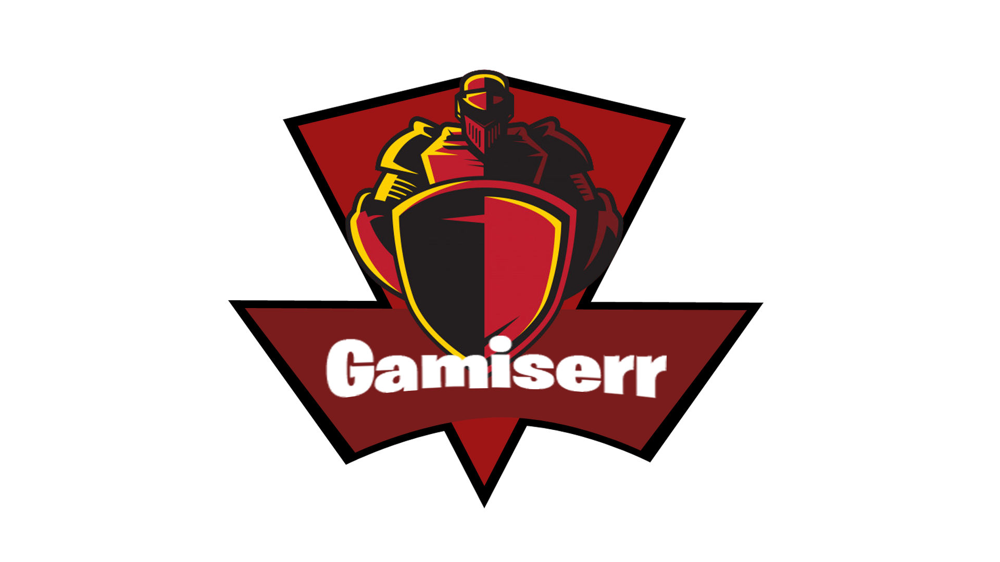
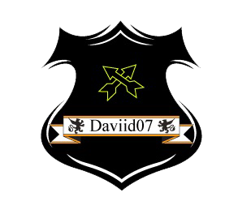

Ayuda
Este es un juego bastante sencillo, consiste en esquivar las bolas de fuego saltando con la tecla espacio cuanto mas lejos llegues, el alíen ira evolucionando hasta llegar a la fase dorada.
Juego basado en el clásico juego del dinosaurio de Google y el universo de Alíen.
Juego creado por:
ISAAC Y DAVID

